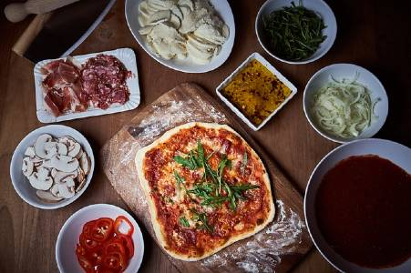

Ingredient Information
Making good pizza is only as good as the ingredients. There are not many ingredients in a pizza, so what you use needs to be the best you can get. A few ingredients that make good pizza are: high protein flour, high quality tomato products (preferably from Italy or California), quality Italian or Wisconsin Cheese and meat. Garlic oil is also a great finishing element to a great pizza.
One of the key ingredients to making a pizza pie that is digestible and sets it apart from store brands is the crust. The flour needs to be above 12 percent protein, so that a more traditional long ageing of the dough can take place. Ageing the dough for 72 hours in cold fermentation allows for the yeast to break down the flour for greater digestiblility and better flavor. We will also use fine sea salt and diastatic malt to add a nutty sweetness to the dough. We will also weigh out the ingredients so that our recipe is consistent time after time.
The sauce should be made ahead a day or so. This will allow the flavors to combine well. The sauce can be as easy as a can of whole peeled or crushed tomatoes, and pour into food a processor or blender and pulse. Add some salt, shaved garlic, and dried oregano to taste.
For simplicity, a ready made pizza crust can be used; or in bigger markets ready to use pizza dough can be purchased. Here is a great sample pizza dough recipe to get you started:
Basic Pizza Dough
| Ingredient | Amount |
|---|---|
| High protein flour | 500 grams |
| Active dry yeast | 4 grams |
| Diastatic Malt | 9 grams |
| 9 grams | Fine Sea Salt |
| 10 grams | Extra Virgin Olive Oil or Avocado Oil |
| 225 grams | Ice Water, for slowing down the action of the yeast. |
| 70 grams | Lukewarm Water, for activating the yeast |
Procedure
1. Combine all dry ingredients in a bowl and whisk.
2. Add water into dough and mix thoroughly, and knead for 2 minutes. Add oil and knead for two more minutes.
3. Place in a covered bowl and let rest 4 to 12 hours at room temperature. Place in the fridge for the remaining 12 hours, or up to 72 hours.
4. Remove from the bowl, and divide into three dough balls. Cover with plastic and let rise for 3 to 4 hours before you are ready to make the pizza. Have fun!